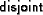

Z sections are specified with the \zsection command. Here, the
section BirthdayBook is defined. The parent of the section is the
library section; if it is omitted, the standard toolkit is used
as the parent (the standard toolkit to be used
can be overwritten with the directive %%toolkit, see below):
All paragraphs following the \zsection command
belong to this section, up to next \zsection command. This
also holds across LATEX inclusion commands (\input and
\include). You can arbitrarily switch between sections,
as in the example below, where we first add some declarations to
the section BirthdayBook, then the
BirthdayBookExec, and
then again to BirthdayBook:
\zsection[library]{BirthdayBook}
\input{basic}
\zsection[BirthdayBook]{BirthdayBookExec}
\input{exec}
\zsection[library]{BirthdayBook}
\input{addtobasic}
If a document does not contain a \zsection, then one is
implicitly created named after the file name of the document.
Each Z section has the section Toolkit as an implicit parent.
In order to change the name of this implicite parent, the type-checker
directive \zsection is used. This directive needs to
placed in the preamble of the document, before the first Z section or
any other Z markup, such as in:
\documentclass{article}
%%toolkit "ExtendedToolkit"
...
If the string given to %%toolkit is empty, not implicite
parent will be created. This is useful to define toolkits by your own.
Z prefix (e.g. -4), postfix (e.g. ), infix (e.g. 47+11) and
nofix (e.g.
)
operators can be declared by
Standard-Z operator templates. These are given in LATEX by the
commands \zfunction, \zrelation,
resp. \zgeneric. The templates are declared with three
arguments, (1) the precedence, (2) the associativity, and (3) the
template itself. The precedence is omitted for relations and nofix
operators. The associativity is only given for infix functions and
generics. The template is build up by ordinary identifiers and place
holders for single parameters (i.e. \_) and comma separated
lists of parameters (i.e. ,,):
Note that operator template commands can appear anywhere
in a document, but they must not appear inside of Z environments
such as zed. The ZETA-style provides the
environment zdirectives in order to group operator
templates; it behaves like zed regarding type-setting,
but has no special meaning for the type checker.
The directives for introducing operator templates known from Spivey-Z and ESZ2 are still supported, by internally translating them to the according Standard-Z templates. The mapping is as follows:
%%inrel word
(_ word _)
%%prerel word
(_ word)
%%ingen word
2 (_ word _)
%%pregen word
90 (_ word)
%%inop word N
10+(10*N) (_ word _)
%%texrel N \tok
\zrelation{9999 (\tok {\_} ... {\_})}
%%texgen N \tok
\zgeneric{9999 (\tok {\_} ... {\_})}
%%texop N \tok
\zfunction{9999 (\tok {\_} ... {\_})}
The ZETAstyle offers some auxiliar macros to define styles of new operators:
\Zkeyword: define a keyword.
\Zinop: define an infix operation, such as \Zpreop: define a function or prefix operations,
such as \Zinrel: define an infix relation, such as
\Zprerel: define a prefix relation, such as
.
Use these macros as in:
The effect is a selection of an appropriate font and spacing properties of the introduced LATEX token in math.
ZETA-Z supports the Standard-Z language (beside of a few incompatibilities described in the next Section). Among Z-sections and operator templates, the most important features are the followings:
Users upgrading from Spivey-Z or ESZ-Z to ZETA-Z (resp. to Standard-Z in general) have to tackle with the following typical incompatibilities (for a comprehensive discussion, see [2]):
These incompatibilities are straight-forward detected by a type checker. Experiences show that around 90% of the problems when upgrading a Z specification are related to the usage of S', which is commonly applied in expressions such as (now to be written as ).
Standard-Z is still a moving target. ZETA-Z does not conform completely to it, and adds extensions which are currently not found in the Standard.
The following restrictions compared to the Standard are currently present:
{ and
} are not treated as whitespace, but as normal
tokens2.
The lexis will by synchronized with the Standard in one of the
next revisions of ZETA.
The following extensions compared to the Standard are currently found in ZETA-Z:
&. It
is in general possible to refer to Z names in a free type definition
which are themselves defined in dependency of this free type.
Some of these extensions have been proposed to the Z ISO Panel, and some of them might make their way into the final Standard. Yet, be aware that when using these extensions, your specification might become incompatible with Standard Z3
A further extension of ZETA-Z is a builtin notation and type for denotations (strings).
A denotation is written as follows:
Inside of a denotation \ZD{...}, the following escape
sequences can be used:
\n - newline
\r - carriage return
\t - tabulator
\b - backspace
\f - formfeed
\\ - backslash
\{ - braceopen
\} - braceclose
Only two functions are available on denotations: converts a denotation in a sequence of natural numbers, where each number represents the encoding of the given letter, whereas converts a sequence of numbers into a denotation. The encoding is unspecified.